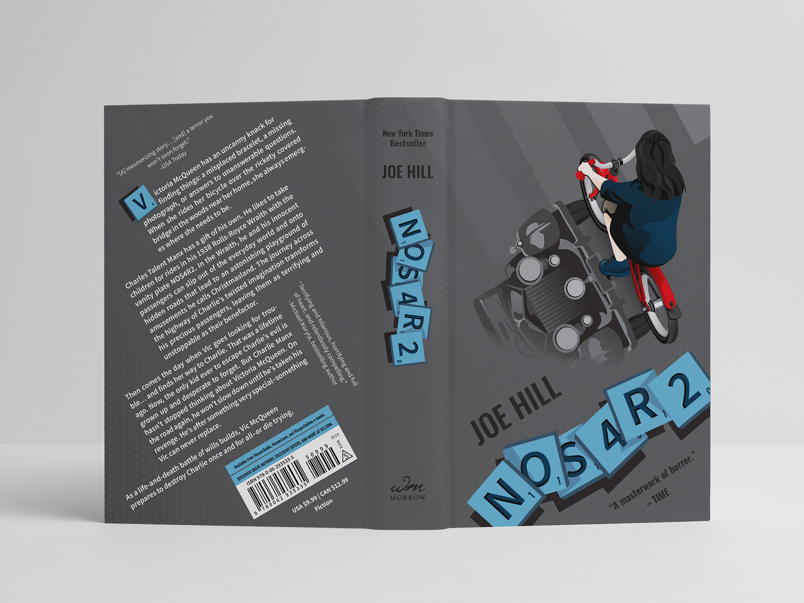

Designing NOS4R2 book cover
Overview
This is an independent project to design a conceptual book cover for Joe Hill's horror novel NOS4R2. The cover communicates the important themes of the story using visual rhetoric and serves as the base for an interactive experience connecting readers to the story. Metaphor and allusion are utilized through the image of the car as the shadow to express the inability to accept reality, signifying something being haunted and not what it appears. The scrabble tiles, an in-story access to the supernatural, represents a bridge between the readers and the fictional world.
Tools
Adobe Illustrator, Photoshop, Cinema 4D, Meta Spark AR
Timeline
Sep – Oct 2022 (first cover design, 4 weeks)
Oct – Nov 2022 (AR effect, 5 weeks)
The novel
What is NOS4R2 about?
NOS4R2 (more commonly seen as NOS4A2) is a supernatural horror novel following Victoria McQueen, a woman with the supernatural ability to find missing things. After discovering her ability by riding her bike across an old covered bridge as a child, she eventually crossed path with Charles Manx, a sinister figure who uses his gift to abduct children in a 1938 Rolls-Royce Wraith.
This cover is from The Joe Hill Collection.
Ideation
Identifying imageries to highlight the dark supernatural world
NOS4R2 blends psychological horror with dark fantasy to explore the corruption of innocence, the power of imagination, trauma and self-destruction, among other themes. I wanted to highlight those themes through the story's fantastical world and the objects that connect the characters to their abilities—Vic McQueen's bike, Charlie Manx's Rolls-Royce, and side character's scrabble tiles. The imaginary amusement park Christmasland is an important location and opens up more possibilities for visual elements.
Brainstorm sketches
Initial ideas were sketched on paper for quick explorations. I focused on experimenting with the imageries and themes, then moved onto typography and layout choices.
The sketches featuring the characters and their shadows seemed more interesting and suitable for the story. I explored different placements and angles, and also made simpler sketches focusing on straightforward imageries and typography.
The final stage of paper sketches was exploring different layouts. I chose the concepts of the simpler handprint and the character on her bike with the car as her shadow, and redrew them in axial, concentric, and radial layouts.
Define
Using axial design to simplify refinement
The concept with the character is more distinctive and conveys the story better compared to the handprint. Axial layouts were more appropriate and the least complicated to transition to digital design and refine further.
Attempting a comic book feel
I experimented with colours and stylistic directions. Based on the story, I wanted the design to have a comic book feel.
The art style and colour scheme were inspired by the animated movie ”Spider-Man: Into the Spider-Verse”, the comic book series ”Sin City” by Frank Miller, and ”Hellboy” by Mike Mignolia.
Design
Refining the concept
In Adobe Illustrator, the illustration for the character was drawn referencing a stock image, then adjusted according to the digital sketch. Francesco Francavilla's tribute cover of the book was used as the main reference for the car.
Hex
RGB
#3B4954
59, 73, 84
Hex
RGB
#231F20
35, 31, 32
Hex
RGB
#50514A
80, 81, 74
Hex
RGB
#A3A58C
163, 165, 140
Hex
RGB
#BE1E2D
190, 30, 45
Based on feedback, I switched out the initial blood-like title with the scrabble tiles which have a stronger connection to the story. The direction of the back cover text was aligned to the diagonal direction of the front cover illustration.
AR effect
Beyond the cover
An augmented reality effect was developed with this cover as the base to grant the audience a unique experience with the novel.
For exploration, I ideated and sketched different effects that I could make. I decided on the idea of the scrabble tiles being hidden in the book.
The 3D models of the scrabble tiles was made in Cinema 4D, then imported them into Spark AR. I experimented with the distance effect trigger, tested the effect, and rearranged the elements to create an engaging and nonintrusive experience.
Uncovering the hidden message
In the story, scrabble tiles connect an individual to their supernatural world. To mirror that, in this experience, the tiles act as a bridge between the readers and the fictional world of the novel. The audience is first presented with the cover with scrabble tiles placed on it. By moving closer, the cover disappears to reveal a different set of tiles inside the book, prompting the audience to come closer and investigate to put together the message.
Redesign
Revisiting the cover design
While the first iteration was completed in 2022, I wanted to adjust some details I was not entirely happy with and I decided to make another iteration a year later. I like the first iteration—it has an interesting concept and layout. I was learning more about vector illustrations and wanted to redo the character illustration. I revisited this cover design once again at the start of 2025.
Cleaner illustration, different colour scheme
I used the same sketch as the foundation and maintained the overall layout. The illustrations for the main character and the car were drawn closer to their references. They have less of a comic book art style, but extend across the cover in a subtler manner.
Hex
RGB
#58595B
88, 89, 91
Hex
RGB
#231F20
35, 31, 32
Hex
RGB
#003049
0, 48, 73
Hex
RGB
#669BBC
102, 155, 188
Hex
RGB
#C1111F
193, 17, 31
I shifted to a colder scheme with red as the emphasis—the blue scrabble tiles work more harmoniously with the colours of the main character.
Reverting to the first colour scheme
Looking back at both iterations, the first iteration has a more distinctive colour scheme that better ties to the story. I wanted to experiment with the first colour scheme again but adjust it to be closer to the colours of the digital sketches.
Hex
RGB
#364F50
54 79, 80
Hex
RGB
#141511
20, 21, 17
Hex
RGB
#4D4F44
77, 79, 68
Hex
RGB
#A2A691
162, 166, 145
Hex
RGB
#C1111F
193, 17, 31
I had received feedback that the car was too harsh in the second iteration to be recognized as a shadow, so I also wanted to take this opportunity to make it subtler.
Takeaways
Being able to take one of my favourite stories, explore my creativity, and visualize my interpretation of a core theme was a great experience. To make this happen, I learned about design layouts and different ways to organize imageries and text. I enjoyed sketching and turning one of these ideas into a refined cover.
Looking back at my entire process, I should have done more exploration of colours and styles. The time allotted for the first iteration was four weeks and I had other projects running concurrently, so I had quickly chosen a colour palette and went with it. I still really like the first cover, despite a few small details that I wanted to adjust after learning more about design. However, had I done more explorations and experimentations, I could have made a cover that I was happier with the first time around.